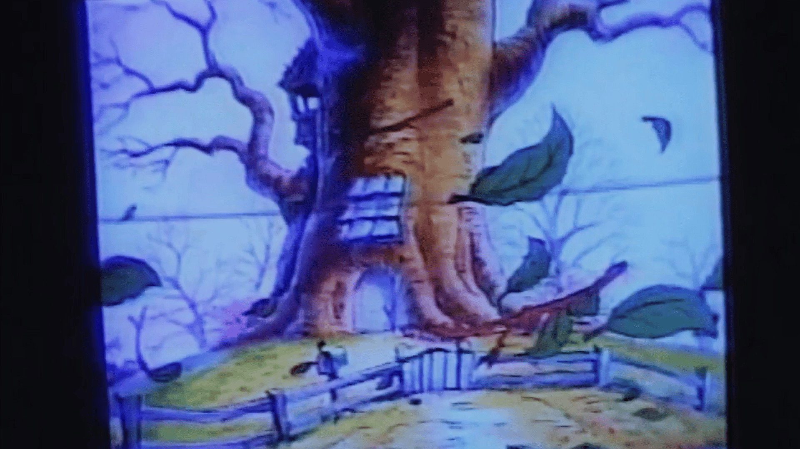

Douna Lim & Théo Pesso, Ryan Cullen
–
Take the total beverage!

Douna Lim & Théo Pesso
Millennium
2025
55:00
On the final day of 1999, Gilbert turns his camera toward his apart- ment, his family, and his reflection in the mirror, even as others cele- brate a global moment suffused with apocalyptic expectation. Through its subtle assemblage of images sourced from the Internet, the film offers insight into the operations and cir- culation of apocalyptic narratives.
Ryan Cullen The Farmer‘s Daughter 2024 18:39
It‘s about how the world is run by dehydrated stepfathers that would rather destroy a lot of things than compromise.